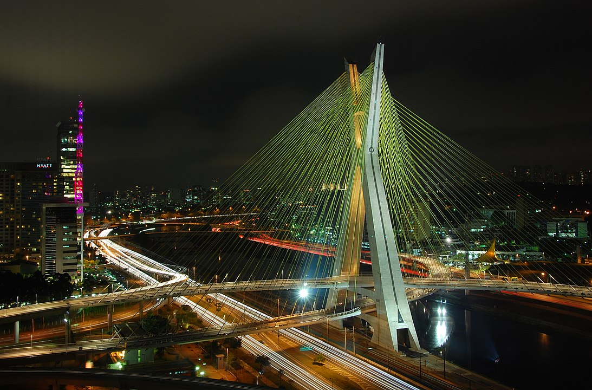

Зміст
- Походження назви
- Історія
-
- Доколумбова епоха
- Колоніальний період
- Географія
- Культура Бразилії
Брази́лія [2] (порт. Brasil; МФА: [bɾaˈziu̯]; за версією ДНВП «Картографія» — Бразілія[3]), офіційно Федерати́вна Респу́бліка
Брази́лія (португальська República Federativa do Brasil, Аудіо listenфайл)[2] — найбільша держава водночас Південної та Латинської Америки.
Займаючи територію площею 8 511 965 км²[4] і маючи населення 212 559 417 осіб, країна є п'ятою за розмірами у світі та шостою за кількістю населення.
Столиця — Бразиліа, а найбільше місто — Сан-Паулу. До складу федерації входять союз 26 штатів та Федеральний округ. Найбільша країна,
офіційною мовою якої є португальська, і єдина в Америках;[5][6]
це також одна з найбільш мультикультурних та етнічно різноманітних націй, причиною чому є століття масової імміграції з усього світу.[7]
Межує на південному заході з Уругваєм, Аргентиною, Парагваєм і Болівією, на заході з Перу і Колумбією,
на півночі з Венесуелою, Гаяною, Суринамом і Французькою Гвіаною, на сході омивається Атлантичним океаном.
Уперше Бразилію відкрив Педру Алваріш Кабрал у 1500 році, приєднавши її до Португальської колоніальної імперії. Незалежність держава проголосила в 1822 році як Бразильська імперія. Значний вплив та культуру країни вплинула Португалія. За віросповіданням більшість бразильців — католики, що робить Бразилію країною з найбільшим католицьким населенням у світі.
Бразилія є одним із засновників Організації Об'єднаних Націй, Великої двадцятки, BRIC, Союз південноамериканських націй, Меркосура, Організація Американських Держав, Співдружності португаломовних країн.
Національна збірна з футболу є п'ятиразовим чемпіоном світу. З 12 червня по 13 липня 2014 року в Бразилії був проведений Чемпіонат світу з футболу 2014. Також у Ріо-де-Жанейро відбулися Літні Олімпійські ігри 2016.
Офіційна назва — Федеративна Республіка Бразилія (порт. Republica Federativa do Brasil).[8] Назва країни Бразил (порт. Terra do Brasil) походить від назви сандалового дерева цезальпінії шипуватої (Caesalpinia echinata) з жовто-червоною деревиною, що використовувалася на той час у фарбуванні — «бразил», або «фернамбук»[9]. Першим Бразилію для європейців відкрив португальський мореплавець Педру Алваріш Кабрал у 1500 році, який за традицією того часу дав нововідкритій землі релігійну назву Земля Істинного Хреста (порт. Terra do Vera Cruz), яку незабаром змінили на Земля Святого Хреста (порт. Terra do Santa Cruz)[9]. Закріпленню назви Бразил сприяло і те, що в Європі з XIV століття був відомий міфічний острів Бразил, що лежить десь в Атлантичному океані та належить до числа так званих «мандрівних» (подібно до Антильських островів, названих на честь мандрівного острова Антилія)[9].

Найдавнішими залишками людини на території Бразилії є фрагменти черепа молодої жінки Лузії, знайдені в печері
Лапа-Вермелья, у штаті Мінас-Жерайс, вік яких складає до 11 тисяч років тому (9 тисяч років до н. е.). Подібний вік
мають декілька скелетів, знайдені в Національному парку Серра-да-Капівара[10]. Найдавніша кераміка та глиняний посуд,
датований 6 тис. років до н. е., були знайдені в басейні річки Амазонки, що свідчить про складну доісторичну культуру,
а їх еволюція стилів — про міграцію та заміну народів.[11]
До прибуття європейців населення Бразилії становило приблизно 7 млн осіб. Розкопки на усій території вказують, що рівень
розвитку населення Бразилії не був високим та залишався на стадії неоліту, а корінні жителі вели напівкочовий спосіб життя.
До найбільших корінних народів Бразилії були Тупі, Макро-же, Араваки, Кариби.[12] У зв'язку з різними мовними, культурними
та іншими переконаннями постійно вели війни один з одним.[13]
Бразилія відкрита в 1500 португальською експедицією на чолі з Педру Альварісом Кабралом. Протягом наступних трьох століть ця
територія була населена португальцями і стала важливим експортером спочатку декоративних порід деревини, потім цукрової тростини,
кави й, нарешті, золота. Важливим джерелом трудових ресурсів були раби, спочатку з-поміж поневолених індіанців, а після 1550 переважно з завезених африканців.
У 1808 королева Португалії Марія I і принц-регент, майбутній король Португалії Жуан VI, рятуючись від армій Наполеона що наступали,
разом з королівським сімейством, дворянством і урядом перемістилися до Ріо-де-Жанейро, адміністративного центру Бразилії. У цьому переїзді
брав участь і британський уряд, який добився для себе привілеїв у торгівлі та різними засобами зберігав їх протягом довгого часу.
Хоча Жуан VI повернувся до Португалії в 1821, під час свого правління у Ріо-де-Жанейро він підняв статус Бразилії до королівства, рівного
Португалії. Принц-регент Педру (у майбутньому імператор Бразилії Педру I та король Португалії Педру IV) проголосив незалежність 7 вересня 1822,
засновуючи незалежну Бразильську імперію. Оскільки корона залишилася в руках дому Браганса, цей акт радше був розділом Португальського королівства
на дві частини, ніж рухом за незалежність, який протікав приблизно у той же час на решті території Америки.
Бразилія — найбільша держава Латинської Америки, що займає майже половину континенту. На півночі межує з Венесуелою, Гаяною, Суринамом, Французькою Гвіаною, на півдні — з Уругваєм, на заході — з Аргентиною, Парагваєм, Болівією і Перу, на північному заході — з Колумбією. На півночі й сході омивається водами Атлантичного океану. Довжина узбережжя — 7491 км. Територія — 8511,996 тис. км²., що становить 5,7 % від усього суходолу світу. Бразилія — п'ята за величиною країна світу (після Росії, Китаю, Канади та США).[14]
Північну половину Бразилії займає широка Амазонська низовина (Амазонія) — глибокий тектонічний прогин, заповнений осадовими породами. На півночі вона поступово переходить у горбисті цокольні рівнини південної частини Гвіанського нагір'я (висота 150—700 м, окремі вершини до 1200 м), обрамлені уздовж державного кордону крутими урвищами гірських ланцюгів Серра-ду-Імері (найвища вершина — Піку-да-Небліна — 2994 м), Серра-Паріма і Серра-Пакарайма (найвища вершина — гора Рорайма — 2772 м). Майже всю решту території країни займає Бразильське нагір'я, що підвищується до півдня та південного сходу і круто обривається до вузького краю берегової Приатлантичної низовини. Крайові брилові масиви Серра-ду-Мар, Серра-да-Мантикейра та інші сягають висоти до 2890 м (гора Бандейра). На захід від приатлантичних масивів і залишкового кряжа («бразилід») — Серра-ду-Еспіньясу на місці тектонічних западин розкинувся пояс пластових і моноклінно-пластових рівнин (лавове плато Парани й інші). У центрі й на півночі переважають цокольні плоскогір'я і рівнини, що чергуються з плато — шападами. На заході на територію Бразилії заходить акумулятивна низовина верховин річки Парагвай — Пантанал.
Для більшої частини території Бразилії характерний теплий тропічний клімат. Середні місячні температури коливаються від 16 до 29 °C; лише на високих східних масивах середня температура липня від 12 до 14 °C; можливі заморозки. Але режим опадів і типи клімату різні. На заході Амазонії екваторіальний вологий клімат (2000-3000 мм опадів на рік, амплітуди середніх місячних температур 2-3 °C), на сході Амазонії та прилеглих пологих схилах Ґвіанського і Бразильського нагір'їв — субекваторіальний з посушливим періодом до 3-4 місяців (1500—2000 мм опадів, на узбережжі близько 3000 мм на рік). У центрі Бразильського плоскогір'я і Пантаналі — субекваторіальний вологий клімат (1400—2000 мм опадів на рік) з великими амплітудами температур (особливо крайніх — до 45-50 °C); на північному сході плоскогір'я кількість опадів знижується до 500 мм і менше на рік, а дощі випадають вкрай нерегулярно: це район частих і тривалих посух. На східній околиці клімат тропічний пасатний, жаркий і вологий, з коротким посушливим сезоном. На півдні плоскогір'я постійно вологий клімат, тропічний на плато Парана і субтропічний у піднесених східних районах до півдня від 24° південної широти.
ультура Бразилії перш за все походить від культури Португалії. Португальські колоністи та іммігранти принесли
католицьку віру, португальську мову і багато традицій, які все ще мають значний вплив на сучасну бразильську культуру.
Як багатонаціональна країна, на її культуру також чинили свій вплив інші народи. Американські індіанці значно вплинули
на кухню Бразилії та на її мову, а африканці, привезені як раби, значною мірою вплинули на бразильську музику, танці, кухню.
Італійські й німецькі іммігранти, які у великій кількості переселялися до Бразилії, також чинили значний вплив на різні аспекти
життя, але їх вплив найсильніший на півдні країни.
Бразильське малярство відображає мультикультуралізм Бразилії та вирізняється стильовою різноманітністю. Серед найвідоміших
бразильських малярів — Бенедіту Калішту.
Згідно з переписом Бразильського інституту географії та статистики (IBGE[25]):
Деякі сповідують суміш різних релігій, наприклад католицизму, кандомбле та індіанських релігій.
Бразилія має найбільше число католиків у світі. Проте, число протестантів зараз зростає. Рахуючи їх разом з католиками, Бразилія
займає друге місце за числом християн у світі після США. До 1970 року більшість бразильських протестантів належали до «традиційних церков»,
здебільшого це були лютерани, пресвітеріани та баптисти, але протягом останніх десятиліть значно зросли число п'ятидесятників та представників
деяких інших конфесій.
Іслам в Бразилії традиційно практикувався деякими африканськими рабами. Сьогодні, мусульманське населення в Бразилії складається здебільшого з
арабських іммігрантів, хоча в іслам переходить і деяке число громадян не арабського походження.
Найпопулярніший вид спорту в Бразилії — футбол, країна знаменита на весь світ своїми гравцями, такими як Рональдо, Пеле, Жаржіньо, Рівеліно, Ромаріо,
Зіко, Карлос Альберто, Рівалдо, Роберто Карлос, Гаррінча, Кака і Рональдіньо. Бразильська національна збірна ставала чемпіоном світу рекордні п'ять
разів, а також перемагала у Кубку конфедерацій чотири рази: у 1997, 2005, 2009 та 2013 роках.
Бразилія також добилася успіхів в інших видах спорту, переважно волейболі, баскетболі, тенісі, гімнастиці та автоперегонах. Багато видів
спорту зародилися в Бразилії, наприклад: